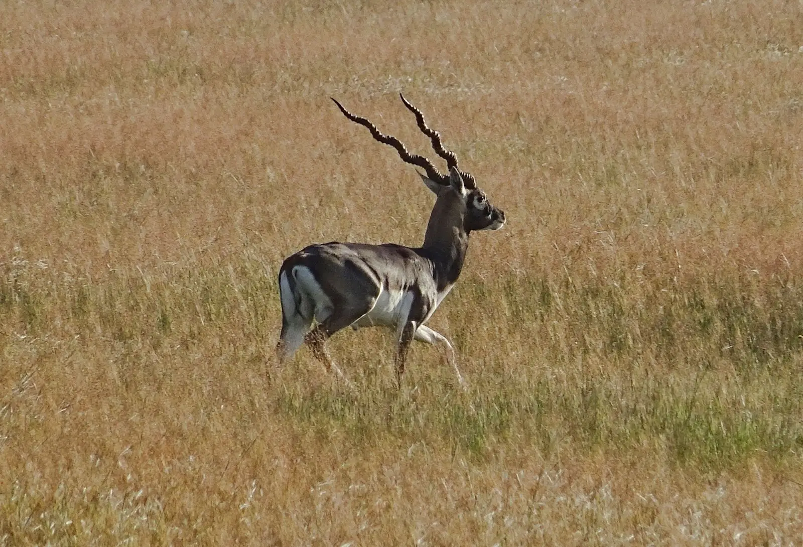

Зовнішній вигляд
Га́рна — одна з небагатьох антилоп, самці та самки яких мають різне забарвлення, тобто в них виражений статевий диморфізм.
Особливості будови
- Довжина тіла 100—150 см, Висота в холці: 60-85 см. Маса: 25-45 кг
- Шерсть навколо очей, підборіддя, черева і грудей має білий колір. Штопороподібні роги сягають у довжину 70 см.
- Голова: великі очі й вуха.
